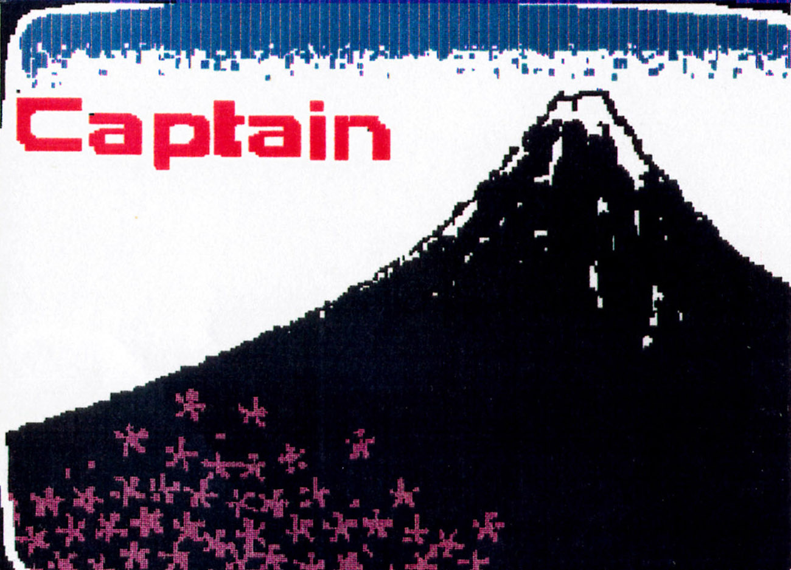

CAPTAIN System / NEC NTX-5000
Japan's videotex that faxed you the screen: pre-rendered pages, kana keypad, numeric page codes

Overview
CAPTAIN (Character and Pattern Telephone Access Information Network system) was a Japanese videotex system created by NTT. Announced in 1978, trialled from 1979 to 1981 with a second larger trial from 1982 to 1983, it launched commercially in November 1984 and ran until March 31, 2002.
CAPTAIN differed from comparable European videotex systems by not transmitting alphanumeric characters. The Japanese kanji character set has over 3,500 characters; in the late 1970s, a terminal with a character generator able to retain and render so many characters on demand was seen as prohibitive. So pages were substantially sent to the end user as pre-rendered images, using coding strategies similar to facsimile machines. The result was a videotex system that felt like watching a fax paint itself across the television: the terminal's screen progressively filled with the page's graphics, rather than receiving typed text.
The interaction hardware was as distinctive as the transmission. Dedicated terminals such as NEC's NTX-5000 combined a 12-key telephone-style numeric keypad with kana characters printed on the keys — multi-tap kana entry, like pre-SMS texting — plus dedicated control keys (enter/cancel/next/previous/menu) and numeric page addressing: you typed 4-6 digit page numbers or selected numbered menu items to move through the service. Navigation was tree-and-numeric, not hyperlinked.
By December 1985, CAPTAIN had 650 information providers and the next year was rolled out to 245 cities. But by March 1992 the system still had only 120,000 subscribers. Like other videotex systems worldwide — with the exception of the French Minitel — it never broke through to mass-market usage. Sanyo released a CAPTAIN adapter for MSX1 computers, and Yamaha released a similar device for the MSX2.
Deep dive
European videotex (Prestel, Minitel, Bildschirmtext) transmitted page code — characters and attributes — and the terminal's character generator rendered them locally. Japan could not: 3,500+ kanji meant a character generator was too expensive. NTT's solution was to send pages as pre-rendered raster images with coding strategies similar to facsimile machines. Every page was effectively an image transmitted over the phone line and drawn into the screen. This is a fundamentally different interaction model: the terminal is not a text renderer but a picture receiver, and the wait-for-the-fax-to-paint ritual became part of using the service.
The NTX-5000's numeric keypad carried kana characters on its keys, enabling multi-tap kana entry — the same interaction pre-smartphone texting would later make universal. Combined with numeric page addressing (type 4-6 digits for a page, or select a numbered menu item), the terminal was essentially an annotated telephone keypad attached to a TV. The whole system reads like a collision of telephone and fax machine with a screen bolted on.
CAPTAIN had 650 information providers by December 1985 and reached 245 cities, but only 120,000 subscribers by March 1992. It survived until 2002 as NTT's stubborn answer to a problem the world was already answering with the web. The museum keeps it because its failure is the texture: a government monopoly engineering around a genuinely hard typographic problem, and losing to history anyway.
CAPTAIN joins Minitel (French consumer videotex, text-based) and the Bildschirmtext terminal (German pay-per-page videotex) as the third national take on the pre-Internet online terminal, and the only one built around fax-style raster transmission. No other artifact in the museum transmits its pages as images painted into the screen.
Team & pioneers
- NTT (Nippon Telegraph and Telephone). Created and operated CAPTAIN; trials run by NTT labs with IEEE papers by Harashima, Kumamoto, and Kitamura (1981).
- NEC. Built the NTX-5000 dedicated CAPTAIN terminal.
- Sanyo / Yamaha. Released CAPTAIN adapter devices for MSX1 (Sanyo) and MSX2 (Yamaha) home computers.
Media
